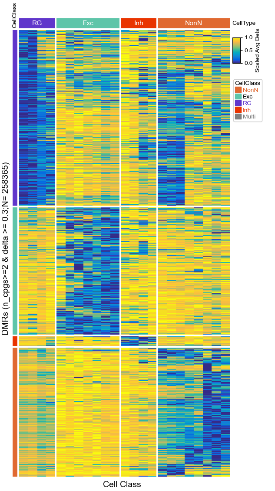
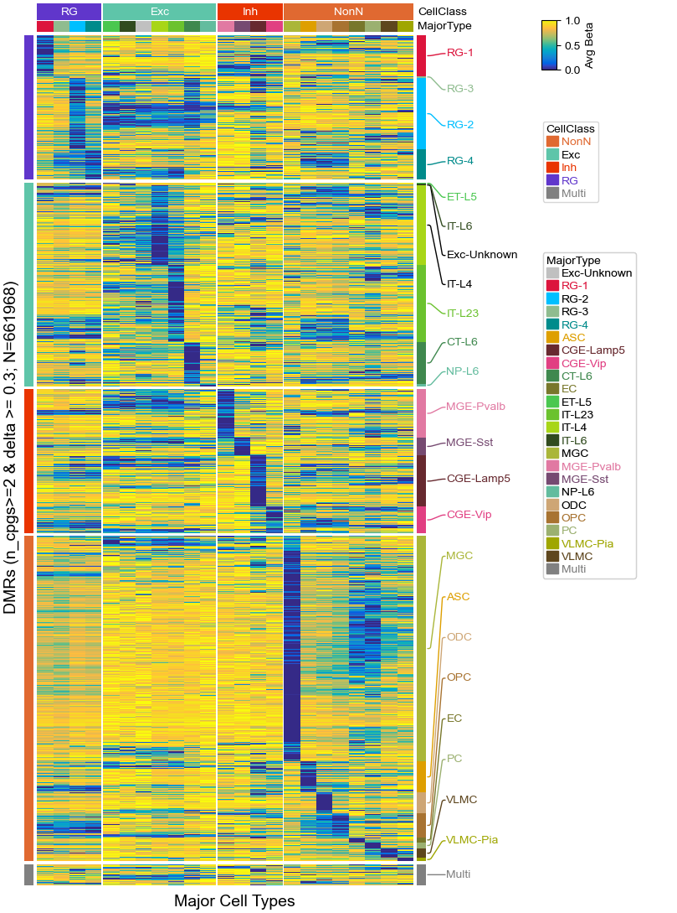

Import packages¶
[1]:
import os,sys
import pandas as pd
import numpy as np
import matplotlib.pylab as plt
%matplotlib inline
plt.rcParams['figure.dpi'] = 100
plt.rcParams['savefig.dpi']=300
plt.rcParams['font.family']='sans serif'
plt.rcParams['font.sans-serif']='Arial'
plt.rcParams['pdf.fonttype']=42
# sys.path.append("/home/x-wding2/Projects/Github/PyComplexHeatmap")
import PyComplexHeatmap as pch
print(pch.__version__)
import czip
1.6.2
Between groups DMRs¶
[2]:
palette_path=os.path.expanduser("~/Projects/mouse_pfc/metadata/mpfc_color_palette.xlsx")
cell_class_colors=pd.read_excel(palette_path,sheet_name='CellClass',index_col=0).Hex.to_dict()
cell_class_colors['Multi']='grey'
cell_class_colors
[2]:
{'NonN': '#E06931',
'Exc': '#5EC5A9',
'RG': '#6036CB',
'Inh': '#E93400',
'Multi': 'grey'}
[3]:
delta=0.3
df_row = pd.read_csv(os.path.expanduser("~/Projects/mouse_pfc/pseudo_cell/CellClass/between_groups_dmr/methylpy/methylpy_rms_results_collapsed.tsv"), sep='\t', index_col=[0, 1, 2])
df_row.columns = [col.lstrip('methylation_level_') if col.startswith(
'methylation_level_') else col
for col in df_row.columns.tolist()]
df_row.rename(columns={'hypomethylated_samples': 'Samples',
'number_of_dms': 'N'}, inplace=True)
df_row.drop('hypermethylated_samples', axis=1, inplace=True)
snames = df_row.columns.tolist()[2:]
a = df_row.loc[:, snames].values
df_row.insert(2, 'Delta', np.max(a, axis=1) - np.min(a, axis=1))
df_row = df_row.loc[~ df_row.Samples.isna()]
df_row = df_row.loc[df_row.Delta >= delta]
df_row = df_row.loc[:, ['Samples', 'N', 'Delta']]
df_row.Samples = df_row.Samples.apply(lambda x: x if ',' not in x else 'Multi')
df_row.reset_index(inplace=True)
df_row.start = df_row.start - 1
cols = df_row.columns.tolist()
df_row.set_index(cols[:3], inplace=True)
print("Reading and processing data..")
data = pd.read_csv(os.path.expanduser("~/Projects/mouse_pfc/pseudo_cell/CellClass/between_groups_dmr/methylpy/dmr.major_type.beta.txt"), sep='\t', index_col=[0, 1, 2])
common_rows = list(set(df_row.index.tolist()) & set(data.index.tolist()))
print("Reading and processing df_col..")
df_col = pd.read_csv(os.path.expanduser("~/Projects/mouse_pfc/5kb_mC_hic_clustering/L2/major_type_to_cell_class.tsv"), sep='\t', index_col=0)
common_cols = list(set(df_col.index.tolist()) & set(data.columns.tolist()))
df_row = df_row.loc[common_rows]
df_col = df_col.loc[common_cols]
cell_type_col = df_col.columns.tolist()[0]
df_row = df_row.loc[df_row.N >= 2]
df_row = df_row.loc[df_row.Samples != 'Multi']
data = data.loc[df_row.index.tolist(), df_col.index.tolist()]
print(data.shape)
Reading and processing data..
Reading and processing df_col..
(258365, 23)
[4]:
df_row
[4]:
| Samples | N | Delta | |||
|---|---|---|---|---|---|
| #chr | start | end | |||
| chr14 | 25667890 | 25667923 | Exc | 2 | 0.649934 |
| chr5 | 70893110 | 70893122 | NonN | 2 | 0.333501 |
| chr3 | 141598191 | 141598238 | RG | 2 | 0.440745 |
| chr1 | 76086002 | 76086015 | RG | 2 | 0.319716 |
| chr9 | 16231701 | 16232342 | RG | 8 | 0.444616 |
| ... | ... | ... | ... | ... | ... |
| chr11 | 75550115 | 75550656 | RG | 6 | 0.547601 |
| 109751156 | 109751187 | RG | 3 | 0.530203 | |
| chr3 | 68823498 | 68825391 | RG | 29 | 0.451270 |
| chr10 | 91354668 | 91354926 | RG | 7 | 0.327058 |
| chr9 | 74147749 | 74150162 | RG | 31 | 0.541438 |
258365 rows × 3 columns
[5]:
df_col
[5]:
| CellClass1 | |
|---|---|
| MajorType | |
| CT-L6 | Exc |
| CGE-Lamp5 | Inh |
| IT-L23 | Exc |
| PC | NonN |
| RG-3 | RG |
| MGC | NonN |
| NP-L6 | Exc |
| ODC | NonN |
| RG-4 | RG |
| CGE-Vip | Inh |
| IT-L6 | Exc |
| MGE-Sst | Inh |
| OPC | NonN |
| VLMC | NonN |
| IT-L4 | Exc |
| Exc-Unknown | Exc |
| RG-1 | RG |
| ET-L5 | Exc |
| EC | NonN |
| MGE-Pvalb | Inh |
| VLMC-Pia | NonN |
| RG-2 | RG |
| ASC | NonN |
[6]:
data
[6]:
| CT-L6 | CGE-Lamp5 | IT-L23 | PC | RG-3 | MGC | NP-L6 | ODC | RG-4 | CGE-Vip | ... | VLMC | IT-L4 | Exc-Unknown | RG-1 | ET-L5 | EC | MGE-Pvalb | VLMC-Pia | RG-2 | ASC | |||
|---|---|---|---|---|---|---|---|---|---|---|---|---|---|---|---|---|---|---|---|---|---|---|---|
| chrom | start | end | |||||||||||||||||||||
| chr14 | 25667890 | 25667923 | 0.077450 | 0.233350 | 0.161600 | 0.733500 | 0.685500 | 0.628000 | 0.148000 | 0.468000 | 0.785000 | 0.662500 | ... | 0.780000 | 0.092500 | 0.125000 | 0.849000 | 0.043500 | 0.839500 | 0.735500 | 0.822500 | 0.694000 | 0.630500 |
| chr5 | 70893110 | 70893122 | 0.903500 | 0.899000 | 0.896500 | 0.637500 | 0.784500 | 0.323000 | 0.947500 | 0.743500 | 0.844000 | 0.961500 | ... | 0.499000 | 0.926000 | 1.000000 | 0.846500 | 0.954500 | 0.489500 | 0.883500 | 0.598000 | 0.884000 | 0.789500 |
| chr3 | 141598191 | 141598238 | 0.491350 | 0.192500 | 0.623500 | 0.055500 | 0.332150 | 0.763500 | 0.464500 | 0.448000 | 0.200150 | 0.549500 | ... | 0.377950 | 0.517000 | 0.583500 | 0.458500 | 0.419500 | 0.633500 | 0.775000 | 0.299000 | 0.082350 | 0.471000 |
| chr1 | 76086002 | 76086015 | 0.797500 | 0.508500 | 0.773500 | 0.050000 | 0.610500 | 0.802000 | 0.869500 | 0.523500 | 0.572500 | 0.572000 | ... | 0.050000 | 0.887000 | 0.778000 | 0.396500 | 0.826500 | 0.797500 | 0.697500 | 0.145450 | 0.562500 | 0.317500 |
| chr9 | 16231701 | 16232342 | 0.780000 | 0.807875 | 0.725875 | 0.630500 | 0.318250 | 0.900750 | 0.807750 | 0.378837 | 0.209437 | 0.654000 | ... | 0.526500 | 0.579750 | 0.715875 | 0.133525 | 0.605375 | 0.663125 | 0.666375 | 0.545250 | 0.307337 | 0.319063 |
| ... | ... | ... | ... | ... | ... | ... | ... | ... | ... | ... | ... | ... | ... | ... | ... | ... | ... | ... | ... | ... | ... | ... | ... |
| chr11 | 75550115 | 75550656 | 0.839000 | 0.557333 | 0.631000 | 0.780667 | 0.171233 | 0.262050 | 0.886500 | 0.492667 | 0.159800 | 0.520667 | ... | 0.726833 | 0.683833 | 0.698000 | 0.231500 | 0.830000 | 0.781667 | 0.631667 | 0.909000 | 0.222417 | 0.338917 |
| 109751156 | 109751187 | 0.687667 | 0.452667 | 0.457667 | 0.241333 | 0.154667 | 0.546333 | 0.629667 | 0.325667 | 0.058667 | 0.503333 | ... | 0.321000 | 0.588000 | 0.709000 | 0.034133 | 0.859333 | 0.360333 | 0.684667 | 0.414333 | 0.081200 | 0.244667 | |
| chr3 | 68823498 | 68825391 | 0.753267 | 0.363077 | 0.607967 | 0.644540 | 0.257347 | 0.775067 | 0.890267 | 0.517487 | 0.184007 | 0.594700 | ... | 0.720740 | 0.763000 | 0.750800 | 0.495783 | 0.471317 | 0.777000 | 0.901467 | 0.657633 | 0.362270 | 0.241253 |
| chr10 | 91354668 | 91354926 | 0.784857 | 0.809286 | 0.508857 | 0.859286 | 0.650714 | 0.823286 | 0.763286 | 0.614143 | 0.339714 | 0.615143 | ... | 0.859000 | 0.469000 | 0.742857 | 0.466571 | 0.851714 | 0.807286 | 0.798000 | 0.913429 | 0.423857 | 0.678143 |
| chr9 | 74147749 | 74150162 | 0.859394 | 0.860788 | 0.766576 | 0.678030 | 0.443909 | 0.813273 | 0.867061 | 0.658548 | 0.311152 | 0.854182 | ... | 0.765485 | 0.813455 | 0.846697 | 0.434000 | 0.893424 | 0.834667 | 0.833515 | 0.808030 | 0.302337 | 0.529615 |
258365 rows × 23 columns
[7]:
col_order=[]
for cc in ['RG','Exc','Inh','NonN']:#df_cols.CellClass.unique():
cols=df_col.loc[df_col.CellClass1==cc].index.tolist()
dendrogram_col=pch.clustermap.DendrogramPlotter(
data.loc[:,cols],
linkage=None,axis=1,label=False,rotate=False
)
col_order.extend(dendrogram_col.dendrogram["ivl"])
df_col=df_col.loc[col_order]
[8]:
# row_order=[]
# for cc in ['RG','Exc','Inh','NonN']+['Multi']:
# print(cc)
# rows=df_row.loc[df_row.Samples==cc].index.tolist()
# if len(rows)<=1:
# row_order.extend(rows)
# continue
# dendrogram_row=pch.clustermap.DendrogramPlotter(
# data.loc[rows],
# linkage=None,axis=0,label=False,rotate=True
# )
# row_order.extend(dendrogram_row.dendrogram["ivl"])
# len(row_order)
# df_row=df_row.loc[row_order]
df_row.sort_values('Samples',inplace=True)
data=data.loc[df_row.index.tolist(),df_col.index.tolist()]
[10]:
row_ha = pch.HeatmapAnnotation(
CellClass=pch.anno_simple(df_row.Samples, colors=cell_class_colors,
rasterized=True,
# add_text=True,
# text_kws=dict(color='black')
),
axis=0)
colors = row_ha.annotations[0].color_dict.copy()
if 'Multi' in colors:
del colors['Multi']
col_ha = pch.HeatmapAnnotation(
# label=pch.anno_label(df_col[cell_type_col],
# merge=True, rotation=15,
# colors=colors),
CellType=pch.anno_simple(df_col[cell_type_col],
add_text=True, colors=colors,
legend=False, height=5,
text_kws=dict(
weight='bold'
)),
axis=1)
plt.figure(figsize=(6.5, 12))
cm = pch.ClusterMapPlotter(data=data, top_annotation=col_ha,
left_annotation=row_ha,
row_cluster=True,col_cluster=False,
standard_scale=0,
show_rownames=False, show_colnames=False,
row_dendrogram=False, col_dendrogram=False,
row_split=df_row.Samples,
col_split=df_col[cell_type_col],
col_split_order=['RG','Exc','Inh','NonN'],
row_split_order=['RG','Exc','Inh','NonN'],
cmap='parula', rasterized=True, label='Scaled Avg Beta',
row_split_gap=1, col_split_gap=0.8, legend_gap=8,
xlabel='Cell Class', legend_hpad=0,
ylabel=f"DMRs (n_cpgs>=2 & delta >= 0.3;N= {data.shape[0]})",
xlabel_kws=dict(color='black', fontsize=14, labelpad=0),
ylabel_kws=dict(color='black', fontsize=14, labelpad=0),
# increace labelpad manually using labelpad (points)
# xlabel_bbox_kws=dict(facecolor='chocolate'),xlabel_side='top',
)
# cm.ax.set_title("Beta", y=1.03, fontdict={'fontweight': 'bold'})
plt.savefig("between_groups_dmr.pdf", bbox_inches='tight')
plt.show()
Starting plotting..
Starting calculating row orders..
Reordering rows..
Starting calculating col orders..
Reordering cols..
Plotting matrix..
Starting plotting HeatmapAnnotations
Starting plotting HeatmapAnnotations
Collecting legends..
Collecting annotation legends..
Collecting annotation legends..
Plotting legends..
Estimated legend width: 23.6375 mm

Within groups DMRs¶
[2]:
if not os.path.exists("df_rows.txt"):
df_rows=None
for ct in os.listdir("within_groups_dmr/methylpy"):
print(ct)
df=pd.read_csv(os.path.join("within_groups_dmr/methylpy",ct,f"{ct}_heatmap.pdf.rows.txt"),sep='\t')
df['Group']=ct
df.drop(['Delta','N'],axis=1,inplace=True)
if df_rows is None:
df_rows=df.copy()
else:
df_rows=pd.concat([df_rows,df])
cols=df_rows.columns.tolist()
df_rows=df_rows.groupby(cols[:3]).agg(lambda x:x.tolist())
for col in ['Samples','Group']:
df_rows[col]=df_rows[col].apply(lambda x:x[0] if len(x)==1 else 'Multi')
df_rows.rename(columns={'Samples':'MajorType','Group':'CellClass'},inplace=True)
df_rows.to_csv("df_rows.txt",sep='\t')
czip.agg_beta(Query="df_rows.txt",Matrix="/home/x-wding2/Projects/mouse-pfc/pseudo_cell/MajorType/matrix/major_type.beta.bed.gz",
Outfile="data.txt",methylpy=False)
else:
df_rows=pd.read_csv('df_rows.txt',sep='\t',index_col=[0,1,2])
df_rows
[2]:
| MajorType | CellClass | |||
|---|---|---|---|---|
| #chr | start | end | ||
| chr1 | 3013471 | 3013579 | MGC | NonN |
| 3026186 | 3026310 | MGC | NonN | |
| 3035862 | 3035927 | VLMC | NonN | |
| 3052666 | 3052823 | MGC | NonN | |
| 3059277 | 3059436 | PC | NonN | |
| ... | ... | ... | ... | ... |
| chrY | 44290504 | 44290637 | MGC | NonN |
| 66427102 | 66427179 | OPC | NonN | |
| 90367464 | 90367503 | MGC | NonN | |
| 90732358 | 90732367 | MGC | NonN | |
| 90792411 | 90792447 | VLMC-Pia | NonN |
661968 rows × 2 columns
[3]:
df_rows.MajorType.unique(),df_rows.CellClass.unique()
[3]:
(array(['MGC', 'VLMC', 'PC', 'IT-L4', 'IT-L23', 'MGE-Pvalb', 'RG-1',
'CGE-Lamp5', 'RG-2', 'ASC', 'Multi', 'RG-4', 'CT-L6', 'ODC', 'OPC',
'VLMC-Pia', 'CGE-Vip', 'EC', 'MGE-Sst', 'IT-L6', 'NP-L6', 'ET-L5',
'RG-3', 'Exc-Unknown'], dtype=object),
array(['NonN', 'Exc', 'Inh', 'RG', 'Multi'], dtype=object))
[4]:
df_cols=pd.read_csv("~/Projects/mouse-pfc/5kb_mC_hic_clustering/L2/major_type_to_cell_class.tsv",sep='\t',index_col=0)
df_cols.rename(columns={'CellClass1':'CellClass'},inplace=True)
df_cols['MajorType']=df_cols.index.tolist()
df_cols.index.name='MT'
df_cols
[4]:
| CellClass | MajorType | |
|---|---|---|
| MT | ||
| EC | NonN | EC |
| RG-2 | RG | RG-2 |
| IT-L4 | Exc | IT-L4 |
| RG-3 | RG | RG-3 |
| RG-4 | RG | RG-4 |
| RG-1 | RG | RG-1 |
| ODC | NonN | ODC |
| MGC | NonN | MGC |
| CT-L6 | Exc | CT-L6 |
| OPC | NonN | OPC |
| PC | NonN | PC |
| CGE-Lamp5 | Inh | CGE-Lamp5 |
| CGE-Vip | Inh | CGE-Vip |
| ASC | NonN | ASC |
| MGE-Pvalb | Inh | MGE-Pvalb |
| Exc-Unknown | Exc | Exc-Unknown |
| IT-L23 | Exc | IT-L23 |
| MGE-Sst | Inh | MGE-Sst |
| VLMC | NonN | VLMC |
| ET-L5 | Exc | ET-L5 |
| VLMC-Pia | NonN | VLMC-Pia |
| NP-L6 | Exc | NP-L6 |
| IT-L6 | Exc | IT-L6 |
[5]:
data=pd.read_csv("data.txt",index_col=[0,1,2],sep='\t')
common_rows=list(set(df_rows.index.tolist()) & set(data.index.tolist()))
data=data.loc[common_rows]
df_rows=df_rows.loc[common_rows]
data
[5]:
| ASC | CGE-Lamp5 | CGE-Vip | CT-L6 | EC | ET-L5 | Exc-Unknown | IT-L23 | IT-L4 | IT-L6 | ... | NP-L6 | ODC | OPC | PC | RG-1 | RG-2 | RG-3 | RG-4 | VLMC-Pia | VLMC | |||
|---|---|---|---|---|---|---|---|---|---|---|---|---|---|---|---|---|---|---|---|---|---|---|---|
| chrom | start | end | |||||||||||||||||||||
| chr9 | 28963217 | 28963260 | 0.83350 | 0.923000 | 0.954500 | 0.939000 | 0.507000 | 0.89900 | 0.833500 | 0.738500 | 0.847000 | 0.95450 | ... | 0.966500 | 0.80500 | 0.769500 | 0.731000 | 0.752500 | 0.81300 | 0.760000 | 0.650500 | 0.772500 | 0.936500 |
| chr4 | 32158998 | 32159443 | 0.78950 | 0.524500 | 0.791500 | 0.767750 | 0.759500 | 0.73275 | 0.791750 | 0.777000 | 0.693250 | 0.79225 | ... | 0.441325 | 0.69625 | 0.538750 | 0.667000 | 0.391250 | 0.46975 | 0.616500 | 0.479250 | 0.704750 | 0.549750 |
| chr13 | 90011452 | 90011460 | 0.29100 | 0.222000 | 0.896500 | 0.225000 | 0.228500 | 0.08115 | 0.476500 | 0.009400 | 0.329500 | 0.32350 | ... | 0.231000 | 0.30700 | 0.390500 | 0.402500 | 0.782000 | 0.06915 | 0.314500 | 0.285500 | 0.812000 | 0.821500 |
| chr10 | 126765779 | 126765801 | 0.81850 | 0.885000 | 0.903000 | 0.909000 | 0.565000 | 0.87500 | 0.875000 | 0.894000 | 0.899000 | 0.93750 | ... | 0.906000 | 0.68550 | 0.721500 | 0.649000 | 0.783500 | 0.80050 | 0.738500 | 0.793500 | 0.809500 | 0.764500 |
| chr5 | 142126735 | 142126952 | 0.84475 | 0.961500 | 0.959250 | 0.902000 | 0.706500 | 0.94350 | 0.781250 | 0.738500 | 0.530250 | 0.97100 | ... | 0.933250 | 0.82150 | 0.774000 | 0.728250 | 0.869750 | 0.87600 | 0.796500 | 0.863000 | 0.842750 | 0.870500 |
| ... | ... | ... | ... | ... | ... | ... | ... | ... | ... | ... | ... | ... | ... | ... | ... | ... | ... | ... | ... | ... | ... | ... | |
| 21947352 | 21947371 | 0.67700 | 0.261333 | 0.766667 | 0.953667 | 0.979333 | 0.93500 | 0.897333 | 0.613667 | 0.864333 | 0.89500 | ... | 0.950667 | 0.75200 | 0.733333 | 0.855667 | 0.874333 | 0.77000 | 0.589333 | 0.506333 | 0.868333 | 0.781000 | |
| chr6 | 50328671 | 50328782 | 0.38975 | 0.316650 | 0.702250 | 0.820000 | 0.662500 | 0.85425 | 0.458000 | 0.662250 | 0.608250 | 0.81025 | ... | 0.889500 | 0.61000 | 0.592250 | 0.047500 | 0.632250 | 0.64975 | 0.605250 | 0.608500 | 0.305500 | 0.407325 |
| chr12 | 15047867 | 15047932 | 0.68650 | 0.750000 | 0.825000 | 0.777500 | 0.266500 | 0.31450 | 0.775000 | 0.874500 | 0.906000 | 0.65700 | ... | 0.867500 | 0.71350 | 0.591000 | 0.290500 | 0.740500 | 0.74400 | 0.723000 | 0.735000 | 0.755500 | 0.559500 |
| chr8 | 48317445 | 48317685 | 0.87640 | 0.938400 | 0.926000 | 0.937200 | 0.596000 | 0.66820 | 0.844600 | 0.885600 | 0.746000 | 0.80600 | ... | 0.880800 | 0.90840 | 0.804800 | 0.765800 | 0.848800 | 0.76380 | 0.824400 | 0.810400 | 0.916000 | 0.935600 |
| chr2 | 93512302 | 93512369 | 0.31350 | 0.788000 | 0.581000 | 0.832500 | 0.604500 | 0.94450 | 0.937500 | 0.900500 | 0.890000 | 0.90750 | ... | 0.956500 | 0.32550 | 0.232700 | 0.221000 | 0.799000 | 0.55550 | 0.614000 | 0.601000 | 0.435400 | 0.470000 |
661968 rows × 23 columns
[6]:
palette_path=os.path.expanduser("~/Projects/mouse-pfc/metadata/color_palette.xlsx")
cell_class_colors=pd.read_excel(palette_path,sheet_name='CellClass',index_col=0).Hex.to_dict()
cell_class_colors['RG']=cell_class_colors['GC']
del cell_class_colors['GC']
colors=pd.read_excel(palette_path,sheet_name='MajorType',index_col=0).Hex.to_dict()
majortype_colors={}
majortype_colors['Exc-Unknown']='silver'
majortype_colors['RG-1']='crimson'
majortype_colors['RG-2']='deepskyblue'
majortype_colors['RG-3']='darkseagreen'
majortype_colors['RG-4']='darkcyan'
cols=data.columns.tolist()
for k in cols:
if k not in majortype_colors:
majortype_colors[k]=colors[k]
majortype_colors
[6]:
{'Exc-Unknown': 'silver',
'RG-1': 'crimson',
'RG-2': 'deepskyblue',
'RG-3': 'darkseagreen',
'RG-4': 'darkcyan',
'ASC': '#DE9F00',
'CGE-Lamp5': '#67292F',
'CGE-Vip': '#E13F82',
'CT-L6': '#3F884E',
'EC': '#78772B',
'ET-L5': '#4AC750',
'IT-L23': '#6BC22E',
'IT-L4': '#A8D617',
'IT-L6': '#314B1F',
'MGC': '#AAB639',
'MGE-Pvalb': '#E179A2',
'MGE-Sst': '#764A71',
'NP-L6': '#63BC9E',
'ODC': '#CEA675',
'OPC': '#A87331',
'PC': '#9BB070',
'VLMC-Pia': '#9FA600',
'VLMC': '#5E461E'}
[7]:
cell_class_colors
[7]:
{'NonN': '#E06931', 'Exc': '#5EC5A9', 'Inh': '#E93400', 'RG': '#6036CB'}
[8]:
# df_rows=df_rows.sample(8000)
# df_rows.sort_values(['CellClass','MajorType'],inplace=True)
# df_cols.sort_values(['CellClass','MajorType'],inplace=True)
# df_rows.sort_values('MajorType',inplace=True)
# df_cols.sort_values('MajorType',inplace=True)
[9]:
data.shape
[9]:
(661968, 23)
[10]:
col_order=[]
for cc in ['RG','Exc','Inh','NonN']:#df_cols.CellClass.unique():
cols=df_cols.loc[df_cols.CellClass==cc].index.tolist()
dendrogram_col=pch.clustermap.DendrogramPlotter(
data.loc[:,cols],
linkage=None,axis=1,label=False,rotate=False
)
col_order.extend(dendrogram_col.dendrogram["ivl"])
df_cols=df_cols.loc[col_order]
[11]:
row_order=[]
for major_type in df_cols.MajorType.unique().tolist()+['Multi']:
rows=df_rows.loc[df_rows.MajorType==major_type].index.tolist()
if len(rows)<=1:
row_order.extend(rows)
continue
dendrogram_row=pch.clustermap.DendrogramPlotter(
data.loc[rows],
linkage=None,axis=0,label=False,rotate=True
)
row_order.extend(dendrogram_row.dendrogram["ivl"])
len(row_order)
df_rows=df_rows.loc[row_order]
# major_types=df_rows.MajorType.unique().tolist()
# df_cols=df_cols.loc[[mt for mt in major_types if mt!='Multi']]
data=data.loc[df_rows.index.tolist(),df_cols.index.tolist()]
[12]:
# row_split_order=sorted(df_rows.loc[:,['CellClass','MajorType']].apply(lambda x:tuple(x),axis=1).unique().tolist())
# col_split_order=sorted(df_cols.loc[:,['CellClass','MajorType']].apply(lambda x:tuple(x),axis=1).unique().tolist())
# col_split_order=df_cols.groupby('CellClass').MajorType.agg(lambda x:x.unique().tolist()).sum()
# row_major_types=df_rows.MajorType.unique().tolist()
row_split_order=df_rows.CellClass.unique().tolist()
# row_split_order=[c for c in col_split_order+['Multi'] if c in row_major_types]
col_split_order=[c for c in row_split_order if c !='Multi']
row_split_order,col_split_order
[12]:
(['RG', 'Exc', 'Inh', 'NonN', 'Multi'], ['RG', 'Exc', 'Inh', 'NonN'])
[13]:
cell_class_colors1=cell_class_colors.copy()
cell_class_colors1['Multi']='grey'
majortype_colors1=majortype_colors.copy()
majortype_colors1['Multi']='grey'
left_ha = pch.HeatmapAnnotation(
CellClass=pch.anno_simple(df_rows.CellClass, colors=cell_class_colors1,
rasterized=True,
# add_text=True,
# text_kws=dict(color='black',rotation=90)
),
axis=0,label_kws=dict(visible=False))
right_ha=pch.HeatmapAnnotation(
MajorType=pch.anno_simple(df_rows.MajorType, colors=majortype_colors1,
rasterized=True,
),
label=pch.anno_label(df_rows.MajorType, merge=True,colors=majortype_colors1,
extend=True,relpos=(0,0.5),height=6),
axis=0,label_kws=dict(visible=False))
col_ha = pch.HeatmapAnnotation(
# label=pch.anno_label(df_cols.CellClass,merge=True,colors=cell_class_colors1),
CellClass=pch.anno_simple(df_cols.CellClass, colors=cell_class_colors1,
rasterized=True,legend=False,
add_text=True,height=4.5,
text_kws=dict(color='white')
),
MajorType=pch.anno_simple(df_cols.MajorType,colors=majortype_colors1,
legend=False
),
axis=1)
plt.figure(figsize=(6.5, 12))
cm = pch.ClusterMapPlotter(data=data, top_annotation=col_ha,
left_annotation=left_ha,
right_annotation=right_ha,
row_cluster=False,col_cluster=False,
standard_scale=0,
show_rownames=False, show_colnames=False,
row_dendrogram=False, col_dendrogram=False,
row_split=df_rows.CellClass,
col_split=df_cols.CellClass,
col_split_order=col_split_order,
row_split_order=row_split_order,
cmap='parula', rasterized=True, label='Avg Beta',
row_split_gap=0.8, col_split_gap=0.5, legend_gap=14,
legend_width=40,
xlabel="Major Cell Types", legend_hpad=0,
ylabel=f"DMRs (n_cpgs>=2 & delta >= 0.3; N={data.shape[0]})",
xlabel_kws=dict(color='black', fontsize=14, labelpad=0),
ylabel_kws=dict(color='black', fontsize=14, labelpad=0),
# xlabel_bbox_kws=dict(facecolor='chocolate'),xlabel_side='top',
)
# cm.ax.set_title("Beta", y=1.03, fontdict={'fontweight': 'bold'})
plt.savefig("all_dmr_heatmap.pdf", bbox_inches='tight')
plt.show()
Starting plotting..
Starting calculating row orders..
Reordering rows..
Starting calculating col orders..
Reordering cols..
Plotting matrix..
Starting plotting HeatmapAnnotations
Starting plotting HeatmapAnnotations
Starting plotting HeatmapAnnotations
Collecting legends..
Collecting annotation legends..
Collecting annotation legends..
Collecting annotation legends..
Plotting legends..

[ ]: